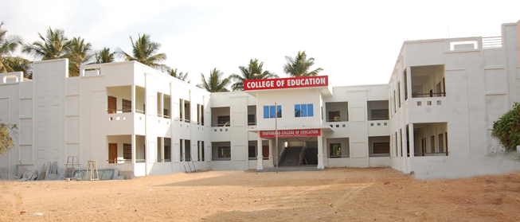
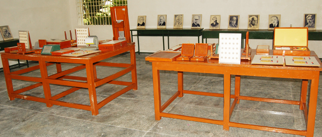
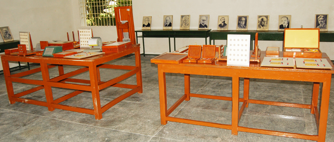
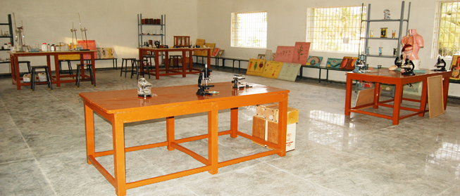
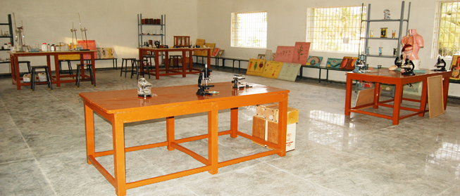
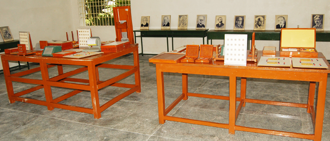
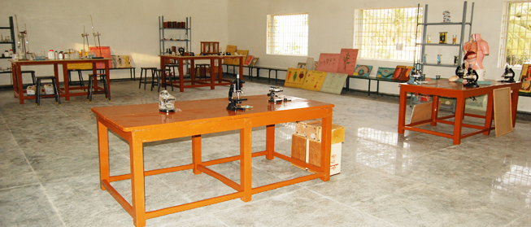

ADMISSION

 

 



Eligibility : Those who have secured 50% of marks and above in Degree examinations need apply for B.Ed., course. This will be relaxed for SC / ST candidates.
Eligibility Exception : There shall be a relaxation of marks in favor of SC and ST candidates as per norms of the State Govt. and the NCTE.
Age limit : There is no upper age limit for admission to B. Ed. Courses.
Method Subjects : English, Tamil, maths, physical science, computer science, biological science, commerce, history.
Conditions :
- Each student will be on probation for 50 working days from the date of admission and the student found unsuitable will be dismissed by the Principal.
- During the period of training, students should not appear for any other examination and interviews.
- Students will not ordinarily be granted any leave in advance or in continuation of the Mid – term / Christmas / Pongal or any other scheduled holidays.
- Duration of B.Ed Course: The Colleges offers One Year Secondary Teacher Education Programme known as B.Ed.